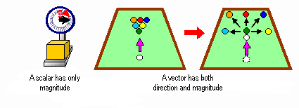
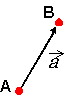
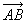

It is easier to place an object into a three-dimensional space if you first move the vertex coordinate to its starting position. Then in your game, you can apply changes to the objects such as translating, rotating, or scaling them -- all of which are easily accomplished by using vectors and matrices.
A scalar is a quantity that has only one magnitude on a specific scale such as length, time, or volume. A vector is a quantity that has both magnitude and a direction such as force or rate. This is illustrated here:

The following shows a vector moving from point A to point B:

The direction of the arrow is the direction of its vector. A is called the initial point and B is called the terminal. This vector is expressed as  or .
Nintendo® Confidential
Copyright © 1999
Nintendo of America Inc. All Rights Reserved
Nintendo and N64 are registered trademarks of Nintendo
Last Updated March, 1999